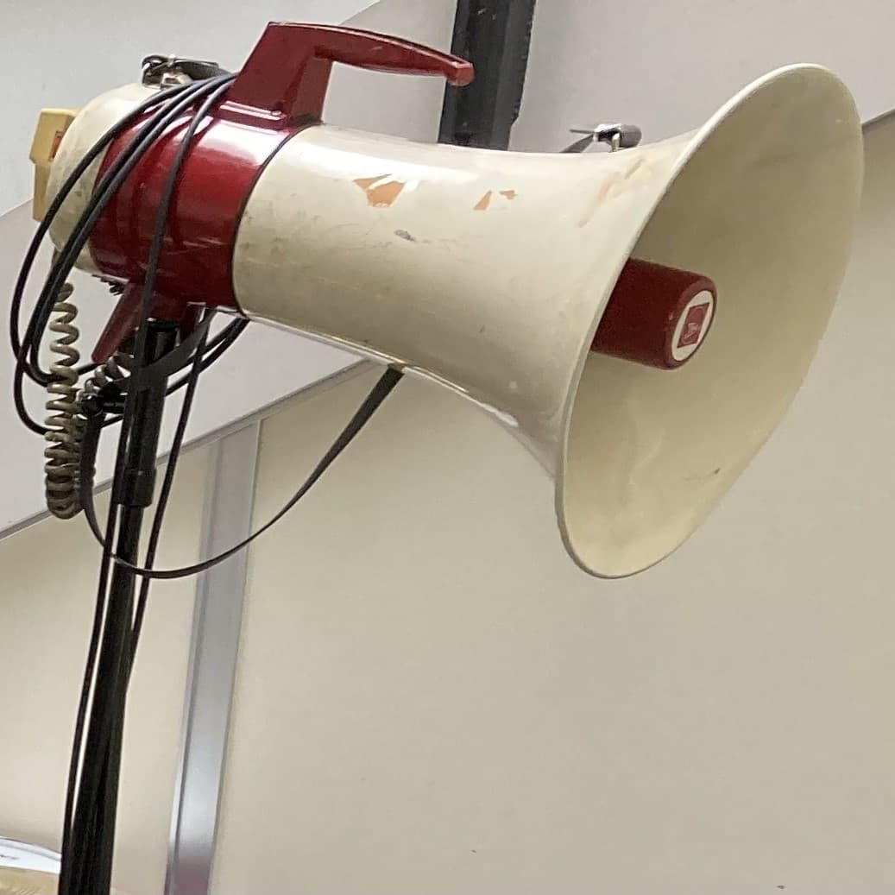

概要
ライブパフォーマンスでの取り回しを想定し、シールドケーブルでミキサーへ直接送れるライン出力機能を搭載したアナログメガホンです。 入力段のオペアンプを意図的に飽和させることで、歪みの効いた特徴的なサウンドを得られるようにしています。
外観

オペアンプであえて歪ませたサウンドと、ミキサー直結のライン出力を備えたライブ用メガホン。
マイクを介さずにミキサーへ直接送れるよう設計したアナログ構成の初期版です。
ライブパフォーマンスでの取り回しを想定し、シールドケーブルでミキサーへ直接送れるライン出力機能を搭載したアナログメガホンです。 入力段のオペアンプを意図的に飽和させることで、歪みの効いた特徴的なサウンドを得られるようにしています。
